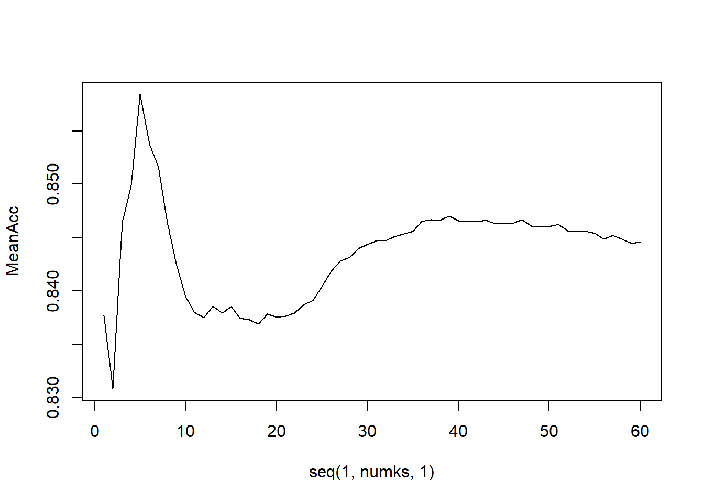

This file contains the code and partial analysis of the “Brewery” and “Beer” data sets as provided by the executive suite of Budweiser. The purpose of this analysis is to make recommendations to the CEO and CFO on potential growth strategy including brewery acquisitions. The analysis also includes an explanation of assumptions, drawbacks of the methodology, and opportunities for future analysis.
Important note about the data:
Data about IBU and ABV was incomplete so generalizations had to be made about the data. There is a description below about the various methodologies conceived and attempted, but in the end it was determined to omit rows with missing values. We found this to give the truest account of the most important factors.
library(readr)
library(dplyr)##
## Attaching package: 'dplyr'## The following objects are masked from 'package:stats':
##
## filter, lag## The following objects are masked from 'package:base':
##
## intersect, setdiff, setequal, unionlibrary(magrittr)
library(ggplot2)
library(class)
library(caret)## Loading required package: latticelibrary(cowplot)
library(forcats)## Warning: package 'forcats' was built under R version 4.0.3library(readr)urlfile="https://raw.githubusercontent.com/alexgilbert84/DDSCaseStudy1/main/Data%20Sources/Beers.csv"
beers<-read_csv(url(urlfile))## Parsed with column specification:
## cols(
## Name = col_character(),
## Beer_ID = col_double(),
## ABV = col_double(),
## IBU = col_double(),
## Brewery_id = col_double(),
## Style = col_character(),
## Ounces = col_double()
## )urlfile2="https://raw.githubusercontent.com/alexgilbert84/DDSCaseStudy1/main/Data%20Sources/Breweries.csv"
breweries<-read_csv(url(urlfile2))## Parsed with column specification:
## cols(
## Brew_ID = col_double(),
## Name = col_character(),
## City = col_character(),
## State = col_character()
## )### Viewed as table, visualization may not be required for this, just the count.
b = table(breweries$State)
t = as.data.frame(b)
names(t)[1] = 'State'
t## State Freq
## 1 AK 7
## 2 AL 3
## 3 AR 2
## 4 AZ 11
## 5 CA 39
## 6 CO 47
## 7 CT 8
## 8 DC 1
## 9 DE 2
## 10 FL 15
## 11 GA 7
## 12 HI 4
## 13 IA 5
## 14 ID 5
## 15 IL 18
## 16 IN 22
## 17 KS 3
## 18 KY 4
## 19 LA 5
## 20 MA 23
## 21 MD 7
## 22 ME 9
## 23 MI 32
## 24 MN 12
## 25 MO 9
## 26 MS 2
## 27 MT 9
## 28 NC 19
## 29 ND 1
## 30 NE 5
## 31 NH 3
## 32 NJ 3
## 33 NM 4
## 34 NV 2
## 35 NY 16
## 36 OH 15
## 37 OK 6
## 38 OR 29
## 39 PA 25
## 40 RI 5
## 41 SC 4
## 42 SD 1
## 43 TN 3
## 44 TX 28
## 45 UT 4
## 46 VA 16
## 47 VT 10
## 48 WA 23
## 49 WI 20
## 50 WV 1
## 51 WY 4colnames(breweries)[1] = "Brewery_id"
brewbeers = merge(breweries, beers, by ="Brewery_id")
head(brewbeers, n=6)## Brewery_id Name.x City State Name.y Beer_ID ABV IBU
## 1 1 NorthGate Brewing Minneapolis MN Pumpion 2689 0.060 38
## 2 1 NorthGate Brewing Minneapolis MN Stronghold 2688 0.060 25
## 3 1 NorthGate Brewing Minneapolis MN Parapet ESB 2687 0.056 47
## 4 1 NorthGate Brewing Minneapolis MN Get Together 2692 0.045 50
## 5 1 NorthGate Brewing Minneapolis MN Maggie's Leap 2691 0.049 26
## 6 1 NorthGate Brewing Minneapolis MN Wall's End 2690 0.048 19
## Style Ounces
## 1 Pumpkin Ale 16
## 2 American Porter 16
## 3 Extra Special / Strong Bitter (ESB) 16
## 4 American IPA 16
## 5 Milk / Sweet Stout 16
## 6 English Brown Ale 16tail(brewbeers, n=6)## Brewery_id Name.x City State Name.y Beer_ID
## 2405 556 Ukiah Brewing Company Ukiah CA Pilsner Ukiah 98
## 2406 557 Butternuts Beer and Ale Garrattsville NY Porkslap Pale Ale 49
## 2407 557 Butternuts Beer and Ale Garrattsville NY Snapperhead IPA 51
## 2408 557 Butternuts Beer and Ale Garrattsville NY Moo Thunder Stout 50
## 2409 557 Butternuts Beer and Ale Garrattsville NY Heinnieweisse Weissebier 52
## 2410 558 Sleeping Lady Brewing Company Anchorage AK Urban Wilderness Pale Ale 30
## ABV IBU Style Ounces
## 2405 0.055 NA German Pilsener 12
## 2406 0.043 NA American Pale Ale (APA) 12
## 2407 0.068 NA American IPA 12
## 2408 0.049 NA Milk / Sweet Stout 12
## 2409 0.049 NA Hefeweizen 12
## 2410 0.049 NA English Pale Ale 12Our initial thoughts were that dropping missing values would leave out too much important information. We immediately attempted to use the KNN method to predict missing values. We found it impossible as we did not have enough explanatory, numeric values to utilize.
We then moved on methodologies that used 1) a median value or 2) a random value. In each of these cases we found the results to skew the date too much towards the chosen number due to the fact that there was such a high number of missing values.
In the end, we found that dropping the beers with missing data altogether was the best decision. Although it reduced the number of data points, we felt that the ABV and IBU were the data points on which we most relied on accuracy for our questions of interest, and imputing those values would do our study an injustice.
The other potential methodology we considered was calculating the median value of IBU and ABV for each style of beer and replacing missing values with the relevant median. Unfortunately, due to time constraints, we did not employ this method.
# create new dataset without missing data
bbcomplete <- na.omit(brewbeers)table(bbcomplete$State)##
## AK AL AR AZ CA CO CT DC DE FL GA HI IA ID IL IN KS KY LA MA MD ME MI MN MO MS
## 17 9 1 23 135 146 6 4 1 37 7 18 25 17 39 91 19 14 10 51 10 7 38 46 29 11
## MT NC ND NE NH NJ NM NV NY OH OK OR PA RI SC TN TX UT VA VT WA WI WV WY
## 23 30 3 9 2 8 6 8 46 32 11 87 47 20 5 5 88 11 35 17 43 42 2 12as.data.frame(table(bbcomplete$State))## Var1 Freq
## 1 AK 17
## 2 AL 9
## 3 AR 1
## 4 AZ 23
## 5 CA 135
## 6 CO 146
## 7 CT 6
## 8 DC 4
## 9 DE 1
## 10 FL 37
## 11 GA 7
## 12 HI 18
## 13 IA 25
## 14 ID 17
## 15 IL 39
## 16 IN 91
## 17 KS 19
## 18 KY 14
## 19 LA 10
## 20 MA 51
## 21 MD 10
## 22 ME 7
## 23 MI 38
## 24 MN 46
## 25 MO 29
## 26 MS 11
## 27 MT 23
## 28 NC 30
## 29 ND 3
## 30 NE 9
## 31 NH 2
## 32 NJ 8
## 33 NM 6
## 34 NV 8
## 35 NY 46
## 36 OH 32
## 37 OK 11
## 38 OR 87
## 39 PA 47
## 40 RI 20
## 41 SC 5
## 42 TN 5
## 43 TX 88
## 44 UT 11
## 45 VA 35
## 46 VT 17
## 47 WA 43
## 48 WI 42
## 49 WV 2
## 50 WY 12arrange(t,Freq)## State Freq
## 1 DC 1
## 2 ND 1
## 3 SD 1
## 4 WV 1
## 5 AR 2
## 6 DE 2
## 7 MS 2
## 8 NV 2
## 9 AL 3
## 10 KS 3
## 11 NH 3
## 12 NJ 3
## 13 TN 3
## 14 HI 4
## 15 KY 4
## 16 NM 4
## 17 SC 4
## 18 UT 4
## 19 WY 4
## 20 IA 5
## 21 ID 5
## 22 LA 5
## 23 NE 5
## 24 RI 5
## 25 OK 6
## 26 AK 7
## 27 GA 7
## 28 MD 7
## 29 CT 8
## 30 ME 9
## 31 MO 9
## 32 MT 9
## 33 VT 10
## 34 AZ 11
## 35 MN 12
## 36 FL 15
## 37 OH 15
## 38 NY 16
## 39 VA 16
## 40 IL 18
## 41 NC 19
## 42 WI 20
## 43 IN 22
## 44 MA 23
## 45 WA 23
## 46 PA 25
## 47 TX 28
## 48 OR 29
## 49 MI 32
## 50 CA 39
## 51 CO 47bbcomplete %>% group_by(State) %>% summarize(medianABV=median(ABV), medianIBU=median(IBU))## `summarise()` ungrouping output (override with `.groups` argument)## # A tibble: 50 x 3
## State medianABV medianIBU
## <chr> <dbl> <dbl>
## 1 AK 0.057 46
## 2 AL 0.06 43
## 3 AR 0.04 39
## 4 AZ 0.055 20
## 5 CA 0.058 42
## 6 CO 0.065 40
## 7 CT 0.061 29
## 8 DC 0.059 47.5
## 9 DE 0.055 52
## 10 FL 0.062 55
## # ... with 40 more rowsbbmedians <- bbcomplete %>% group_by(State) %>% summarize(medianABV=median(ABV), medianIBU=median(IBU))## `summarise()` ungrouping output (override with `.groups` argument)# Dot plot of medians
bbmedians %>% ggplot(aes(x=medianABV,y = medianIBU, color = State)) +
geom_point() +
guides(color=FALSE) +
ggtitle("Median ABV vs Median IBU to show correlation") +
labs(x = "Median ABV by State", y = "Median IBU by State")# Lollipop plot of ABV by State
lolliABV <- bbmedians %>% mutate(State = fct_reorder(State, medianABV)) %>% ggplot(aes(x = State, y = medianABV, color = State, sort = "ascending", add = "segments")) +
geom_point(stat='identity') +
coord_flip() +
geom_segment(aes(x=State, xend=State, y = 0, yend=medianABV)) +
guides(color=FALSE)
# Lollipop plot of IBU by State
lolliIBU <- bbmedians %>% mutate(State = fct_reorder(State, medianABV)) %>% ggplot(aes(x = State, y = medianIBU, color = State, sort = "ascending", add = "segments")) +
geom_point(stat='identity') +
coord_flip() +
geom_segment(aes(x=State, xend=State, y = 0, yend=medianIBU)) +
guides(color=FALSE) +
theme(axis.title.y=element_blank(),
axis.text.y=element_blank(),
axis.ticks.y=element_blank())
plot_row <- plot_grid(lolliABV,lolliIBU)
title <- ggdraw() +
draw_label(
"Median ABV and Median IBU by State",
fontface = 'bold',
x = 0,
hjust = 0
) +
theme(
# add margin on the left of the drawing canvas,
# so title is aligned with left edge of first plot
plot.margin = margin(0, 0, 0, 7)
)
plot_grid(
title, plot_row,
ncol = 1,
# rel_heights values control vertical title margins
rel_heights = c(0.1, 1)
)bbcomplete[which.max(bbcomplete$ABV),] #strange-- I am getting ID2 KY but in another example I am getting CO## Brewery_id Name.x City State Name.y Beer_ID ABV IBU
## 9 2 Against the Grain Brewery Louisville KY London Balling 2685 0.125 80
## Style Ounces
## 9 English Barleywine 16bbcomplete[which.max(bbcomplete$IBU),]## Brewery_id Name.x City State Name.y Beer_ID ABV IBU
## 1857 375 Astoria Brewing Company Astoria OR Bitter Bitch Imperial IPA 980 0.082 138
## Style Ounces
## 1857 American Double / Imperial IPA 12bbcomplete %>% ggplot(aes(x = ABV)) +
geom_histogram() +
ggthemes::theme_wsj() +
ggtitle("Frequency of each ABV") +
theme(axis.title = element_text()) + ylab('Count')## `stat_bin()` using `bins = 30`. Pick better value with `binwidth`.# There is a slight right-skewed distribution of ABV in beers. The large majority of beers have an ABV within .04 and .07.
# There are very few beers that have below .04 ABV, but there seems to be limited popularity of beers as high as .1, with
# several specialty beers around .12 ABV.bbcomplete %>% ggplot(aes(x=ABV, y=IBU, color=IBU)) +
geom_point() +
geom_smooth() +
ggtitle("Scatterplot of ABV vs IBU")## `geom_smooth()` using method = 'gam' and formula 'y ~ s(x, bs = "cs")'## Methodology, need to determine how to classify different types of Ale based on their IBU and ABV
# Create "ales" data frame based on only beers that contain the word "Ale" or "IPA"
ales <- filter(bbcomplete, grepl('Ale|IPA',Style))
ales2 <- ales %>% mutate(aleType = ifelse(grepl('IPA',Style),"IPA","Ale"))
## Test best value for K
splitPerc = .7
iterations = 100
numks = 60
masterAcc = matrix(nrow = iterations, ncol = numks)
for(j in 1:iterations)
{
accs = data.frame(accuracy = numeric(60), k = numeric(60))
trainIndices = sample(1:dim(ales2)[1],round(splitPerc * dim(ales2)[1]))
train = ales2[trainIndices,]
test = ales2[-trainIndices,]
for(i in 1:numks)
{
classifications = knn(train[,c(7,8)],test[,c(7,8)],as.factor(train$aleType), prob = TRUE, k = i)
table(as.factor(test$aleType),classifications)
CM = confusionMatrix(table(as.factor(test$aleType),classifications))
masterAcc[j,i] = CM$overall[1]
}
}
MeanAcc = colMeans(masterAcc)
plot(seq(1,numks,1),MeanAcc, type = "l")
which.max(MeanAcc)## [1] 5max(MeanAcc)## [1] 0.8595406## Explanation: KNN is x% accurate in explaining the classification of IPA or other Ale by using only the IBU and ABV.
## It correctly identifies positive values x% of the time (sensitivity) and correctly identifies negative values x% of the time (sensitivity).
## We believe this is a viable and economic method of classifying beers for our study.
## Build confusion matrix at best k value (k = 5)
classifications = knn(train[,c(7,8)],test[,c(7,8)],as.factor(train$aleType), prob = TRUE, k = 5)
table(as.factor(test$aleType),classifications)## classifications
## Ale IPA
## Ale 142 17
## IPA 21 103 CM = confusionMatrix(table(as.factor(test$aleType),classifications))# Identify most popular styles of beer in the most popular brewing states
CObrews <- bbcomplete %>% filter(State == "CO")
CObrewsdf <- as.data.frame(table(CObrews$Style))
arrange(CObrewsdf,Freq,desc(Freq))## Var1 Freq
## 1 Altbier 1
## 2 American Brown Ale 1
## 3 American Double / Imperial Stout 1
## 4 American Pilsner 1
## 5 American White IPA 1
## 6 Belgian IPA 1
## 7 Belgian Strong Dark Ale 1
## 8 Belgian Strong Pale Ale 1
## 9 English Bitter 1
## 10 English India Pale Ale (IPA) 1
## 11 Euro Dark Lager 1
## 12 Fruit / Vegetable Beer 1
## 13 German Pilsener 1
## 14 Hefeweizen 1
## 15 Irish Red Ale 1
## 16 Märzen / Oktoberfest 1
## 17 Munich Dunkel Lager 1
## 18 Munich Helles Lager 1
## 19 Oatmeal Stout 1
## 20 Roggenbier 1
## 21 American Black Ale 2
## 22 American Blonde Ale 2
## 23 American Stout 2
## 24 American Wild Ale 2
## 25 Belgian Pale Ale 2
## 26 Extra Special / Strong Bitter (ESB) 2
## 27 Saison / Farmhouse Ale 2
## 28 Scotch Ale / Wee Heavy 2
## 29 Witbier 2
## 30 American Amber / Red Lager 3
## 31 American Porter 3
## 32 American Strong Ale 3
## 33 Vienna Lager 3
## 34 American Pale Wheat Ale 4
## 35 Kölsch 4
## 36 Scottish Ale 4
## 37 American Pale Lager 5
## 38 Czech Pilsener 5
## 39 Russian Imperial Stout 5
## 40 American Amber / Red Ale 10
## 41 American Double / Imperial IPA 11
## 42 American IPA 23
## 43 American Pale Ale (APA) 25Calibrews <- bbcomplete %>% filter(State == "CA")
Calibrewsdf <- as.data.frame(table(Calibrews$Style))
arrange(Calibrewsdf,Freq,desc(Freq))## Var1 Freq
## 1 American Amber / Red Lager 1
## 2 American Barleywine 1
## 3 American Double / Imperial Stout 1
## 4 American Porter 1
## 5 American Stout 1
## 6 Belgian Dark Ale 1
## 7 Belgian IPA 1
## 8 English Brown Ale 1
## 9 English Strong Ale 1
## 10 Gose 1
## 11 Herbed / Spiced Beer 1
## 12 Munich Helles Lager 1
## 13 Scotch Ale / Wee Heavy 1
## 14 Vienna Lager 1
## 15 Wheat Ale 1
## 16 American Brown Ale 2
## 17 American Pale Lager 2
## 18 Czech Pilsener 2
## 19 Saison / Farmhouse Ale 2
## 20 American Pale Wheat Ale 3
## 21 Oatmeal Stout 3
## 22 Winter Warmer 3
## 23 Witbier 3
## 24 American Black Ale 4
## 25 American Blonde Ale 5
## 26 Fruit / Vegetable Beer 5
## 27 Hefeweizen 5
## 28 Kölsch 5
## 29 Cream Ale 6
## 30 American Amber / Red Ale 9
## 31 American Double / Imperial IPA 10
## 32 American Pale Ale (APA) 13
## 33 American IPA 38# Identify the brewery in a small state that makes those beers
NDbrews <- bbcomplete %>% filter(State == "ND")
NDbrewsdf <- as.data.frame(table(NDbrews$Style))
arrange(NDbrewsdf,Freq,desc(Freq))## Var1 Freq
## 1 American IPA 1
## 2 American Pale Ale (APA) 1
## 3 Scottish Ale 1